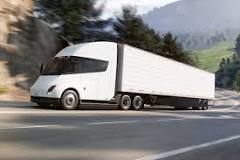
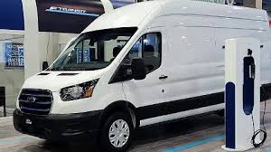

Transporte y Automatización
Son parte de nuestro plan de *ecology project* que fomenta nuestra participación en la lucha por cero contaminación y el aire limpio.
| Tipo de Transporte | Combustible | Daño Ambiental | Imagen | Cantidad |
|---|---|---|---|---|
| Camión | Tesla Semi | 0% de daño |  | 2 |
| Camioneta de reparto | Ford E-Transit | 0% de daño |  | 4 |
Automatización
1. Automatización en Recepción y Registro
1.1 Escaneo de códigos de barras o QR para registrar rápidamente cada paquete que llega.
1.2 Lectores RFID para identificar paquetes sin contacto directo.
1.3 Sistemas de gestión de inventario automatizados para registrar entradas en tiempo real.
1.4 Rastreo de guías.
2. Clasificación Automática de Paquetes
Cintas transportadoras inteligentes con sensores y brazos robóticos que:
Detectan tamaño y peso.
Clasifican automáticamente según destino.
Software de ruteo que determina el trayecto más eficiente desde el centro de distribución.